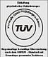
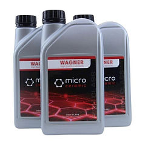

JAPAN NETWORKは、ドイツWAGNER（ワグナー）社の特殊潤滑油・MCオイル・各種添加剤の日本総輸入販売元です。20年以上にわたり蓄積された技術力と信頼で、愛車のパフォーマンスを最大限に引き出し、エンジンや機械の寿命を飛躍的に延ばします。

Wagner氏によるクライアント工場へのコンサルティング風景
メカニカルエンジニアであったWagner氏は、従来の潤滑油による摩耗や故障を解決すべく独自の研究を開始。ミュンヘン大学との連携により誕生したのが、人工固体潤滑剤「マイクロセラミック技術」です。今日、WAGNER製品はクラシックカーから最新の高性能車、精密産業機械に至るまで、世界中で高い信頼を獲得しています。
超微粒子マイクロセラミック固形分（粒子径 0.02-0.15µm）が金属表面の微細な凹凸に定着し、滑らかな保護層を形成。金属同士の直接接触を防ぎ、フリクションロスを極限まで削減します。


左図は、金属(Metall)同士のすき間をオイル(Öl)とマイクロセラミック粒子が満たしている様子を示しています。微細なセラミック粒子が金属表面の凹凸に入り込み、荷重がかかった際に金属同士が直接触れ合うのを防ぐことで、摩擦・摩耗を大幅に低減します。右図はその接触部分を拡大したもので、セラミック粒子が均一に分布し、滑らかな保護層を形成している様子がわかります。



ドイツTÜV規格認証取得

MCオイル（小型ボトル缶）

MCオイル（中型ポリ容器）
自動車メーカーをはじめ、国内外の多様な産業分野にて導入されています。
大手自動車整備工場・クラシックカープロショップ・レースチーム・トラック運送事業者・農業機械ディーラー・産業機械プラント etc...
WAGNER MC-50-M は、グリース並びオイルブレンディング施設で使用する為に設計された工業用添加剤原料で、MoS2二硫化モリブデン・グラファイト・PTFE(テフロン)等の固体添加剤代替品としてご利用頂けます。
詳細は、以下をクリック下さい。
MC-50-M セラミック・ペースト日本語資料